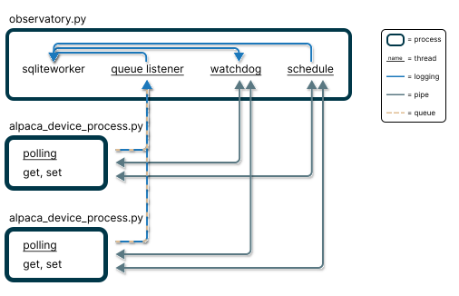

Core Logic#
Astra’s startup sequence consists of three phases:
Initialization
System Setup: Initializes the SQLite database, shared communication queues, and global state flags.
Configuration: Loads observatory settings and FITS header templates.
Process Creation: Spawns isolated processes for each configured device (Camera, Telescope, etc.).
Device Connection
Handshake: Device processes connect to their respective hardware drivers.
Polling: Devices begin polling properties defined in the FITS header configuration.
Safety: The Watchdog begins monitoring device health, safety monitor, and weather conditions.
Interface Launch
API & UI: The web server and user interface come online.
System Architecture#
Astra utilizes a multi-process architecture for stability. Each hardware device runs in its own isolated process, ensuring that a single driver failure does not crash the entire observatory.
{kind=link}

Inter-process communication in Astra using separate device processes.#
Data Management
All polled data and logs are stored in a local SQLite database. To handle high-concurrency writes from multiple device processes without locking issues, Astra uses a dedicated Database Worker.
Devices send data to a shared queue.
The Database Worker consumes the queue and handles all write operations.
The Watchdog reads historical weather data from the database to make informed safety decisions.
Communication
Queues: Used for transferring bulk data (logs, polled data) to the database.
Pipes: Used for direct, low-latency command execution between the main controller and device processes.
For a specific list of dependencies (including astropy, fastapi, photutils, etc.), please refer to the pyproject.toml file or the source code.
Watchdog#
The watchdog is the backbone of Astra’s operational safety and automation. It continuously monitors the system state and manages:
Weather Safety: Automatically closes the observatory if the SafetyMonitor or ObservingConditions report unsafe parameters.
Device Health: Tracks connectivity and responsiveness of all hardware.
Error Management: In the event of system errors or critical device failures, the observatory is automatically safely closed.
Schedule Execution: Triggers the scheduler when the Robotic Operations Switch is enabled and a valid schedule is loaded.
System Heartbeat: Maintains a real-time status object (accessible via API) for external monitoring services.
Data Retention: Archives the last 24 hours of logs to CSV format daily and purges database records older than 3 days to maintain performance.
When the watchdog is active and the Robotic Operations Switch is enabled, the system enters autonomous mode and begins executing the schedule. If a new schedule is loaded while running, the robotic switch needs to be toggled off and on again to unload the previous schedule and start the new one.
Weather Safety#
Astra ensures observatory equipment safety by monitoring conditions via the configured ASCOM SafetyMonitor and ObservingConditions via its internal safety logic.
The scheduler distinguishes between two types of actions:
Weather-dependent: Cannot run in unsafe conditions (e.g.,
open,object,autofocus,calibrate_guiding,pointing_model).Weather-independent: Safe to run regardless of weather (e.g.,
calibration,close,cool_camera,complete_headers).
If weather becomes unsafe, the system immediately suspends weather-dependent actions and closes the observatory. Weather-independent actions (like taking dark frames) may continue.
Automatic Resumption: Operations resume automatically when conditions return to safe levels for a period defined by the triggered max_safe_duration setting, provided the schedule is still valid for the current time.